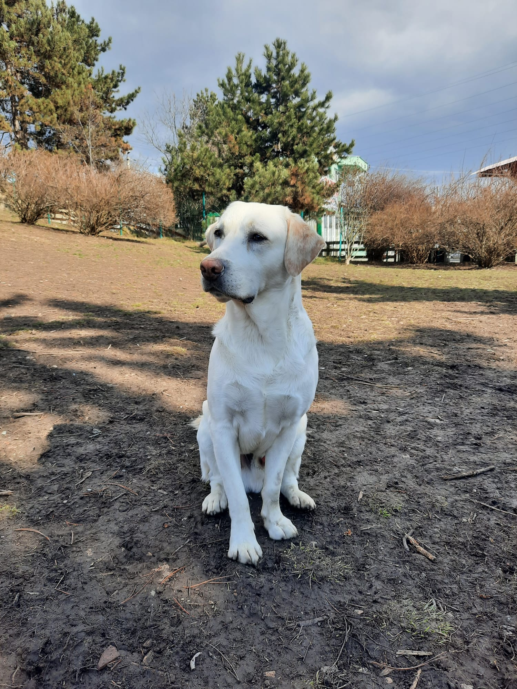

Bună! Numele meu este Kabul și am decis să îmi creez această pagină pentru ca vreau sa devin foarte cunoscut in randul cateilor si nu numai. Asa ca voi incepe sa ma prezint aici in cel mai detaliat mod posibil. Poate va intrebati cum este structurata o zi din viata mea. Pai...
OK! Acum imi cunoasteti in linii mari activitatile zilnice, va voi prezenta lista cu mancarurile mele preferate.
Mancarurile mele preferate:
Paste
Pizza
Supa
Mancarea din farfuria parintilor
Pastele
Imi plac pastele. Pastele mele preferate sunt cele cu smantana si branza. Sunt foarte gustoase pentru ca au si bucatele de carnita. Chiar daca astea sunt pastele mele preferate, paste pe care in general le mananca oamenii, nu refuz nici o portie de paste fierte amestecate cu putina carne la conserva. Puteti gasi aici o reteta de paste cu smantana foaaarte buna. Pofta buna! Sper sa va puteti convinge parintii sa va dea si voua.
Pizza
Mananc orice pizza, dar fara masline. Urasc maslinele si rosiile. Parintii mei inca nu imi fac pizza de casa, mama spune ca nu ii place sa framante aluat iar tata e prea lenes ca sa o faca, dar sunt niste parinti buni si imi cumpara pizza de la Perfetto Pizza. Ador pizza aia. Mai ales cea cu prosciutto.
Supa
Ei bine, aici mama se pricepe cel mai bine. Si tata imi mai face supa, dar...cum sa va spun. Supa mamei este plina de culoare si aroma, pe cand a tatei este destul de gustoasa, dar are o culoare ciudata. Odata mi-a pus rosii in supa si a trebuit sa arunce supa aia pentru ca eu nu mananc rosii. Vina lui ca a uitat ce gusturi am eu. Supa poate fi cu orice, doar sa aiba cantitatea potrivita de legume si carne sau intestine.
Mancarea din farfuria parintilor
Cand parintii mei incep sa manance, indiferent de cat de mult am mancat in trecut, nu ma pot abtine si cersesc mancare. Am noroc cu asa parinti.

Eu in parcul pentru cățeiO zi din viata mea
Ora
Activitatea
Puncte pentru parinti
09:00
Parintii ma trimit inapoi la somn daca ma trezesc
-5
10:00
Parintii ma trezesc si imi strica somnul de frumusete
-20
11:00
Iesim impreuna la prima plimbareDaca: Sunt dus in parcul de cateiNu sunt dus in parcul de catei